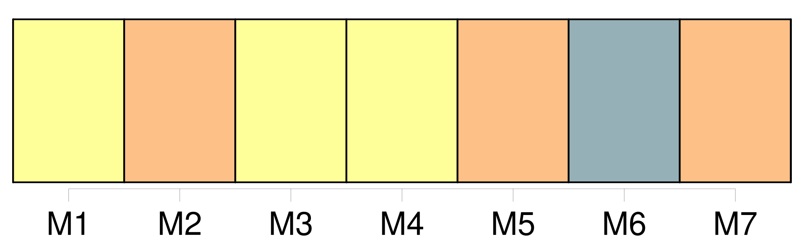
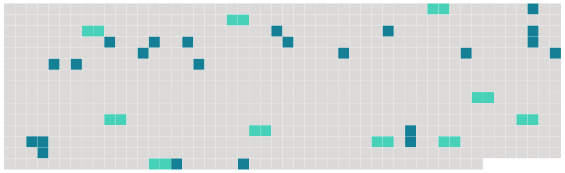

Longueur nb maillons : 33 mentions |
  |
À peine mes camarades à leurs pupitres ― moi en haut de la classe, accroupi pour prendre dans un placard, en ma qualité de premier, les volumes de la lecture à haute voix ―, [le directeur] entra. [1 phrases] [Il] tenait une lettre à la main. Mes jambes fléchirent, les volumes tombèrent, et je les ramassai, tandis que [le directeur] s'entretenait avec le maître. [1 phrases] Enfin, [le directeur] m'appela, et pour me punir finement, tout en n'éveillant, croyait [-il] , aucune mauvaise idée chez les élèves, me [félicita] d'avoir écrit une lettre de douze lignes sans aucune faute. [Il] me demanda si je l'avais bien écrite seul, puis [il] me pria de [le] suivre dans [son] bureau. [1 phrases] [Il] me morigéna dans la cour, sous l'averse. Ce qui troubla fort mes notions de morale, fut qu' [il] considérait comme aussi grave d'avoir compromis la jeune fille ( dont les parents [lui] avaient communiqué ma déclaration ), que d'avoir dérobé une feuille de papier à lettres. [Il] me menaça d'envoyer cette feuille chez moi. Je [le] suppliai de n'en rien faire.
[Il] céda, mais me [dit] qu' [il] conservait la lettre, et qu'à la première récidive [il] ne pourrait plus cacher ma mauvaise conduite. [6 phrases] À une heure, j'avais supplié [le directeur] de ne rien dire à mon père ; à quatre, je brûlais de lui raconter tout. [3 phrases] J'avouai donc, ajoutant avec orgueil que [le directeur] m'avait promis une discrétion absolue ( comme à une grande personne ). [1 phrases] Il vint chez [le directeur] [2 phrases] dit alors [le directeur] surpris et très ennuyé ; il vous a raconté cela??
Il [m'] avait supplié de me taire, disant que vous le tueriez. Ce mensonge du [directeur] [l'] excusait ; il contribua encore à mon ivresse d'homme. [1 phrases] [Le directeur] cachait [sa] rancune. [Le malheureux] ignorait ce que je savais déjà : mon père, choqué par [sa] conduite, avait décidé de me laisser finir mon année scolaire, et de me reprendre. [2 phrases] Ce jour venu, grâce à une injustice [du directeur] [qui] craignait confusément les suites de [son] mensonge, seul de la classe, je reçus la couronne d'or que méritait aussi le prix d'excellence. |
 |
La ressource peut être téléchargée sur la page Ortolang
Si vous avez des questions ou vous voyez des erreurs, merci d'envoyer un mail à silvia.federzoni89@gmail.com
Site développé par S. Federzoni (contact)